Cornell University & ETH Zurich
When Redevelopment Transforms the Housing Stock
Carrot & Stick Policy and the Affordability Puzzle
A forward-looking spatial model in which housing supply emerges from parcel-level redevelopment decisions, showing why policies that increase construction can raise average rents, and who bears the cost of affordable-housing mandates.
Working paper, 2026
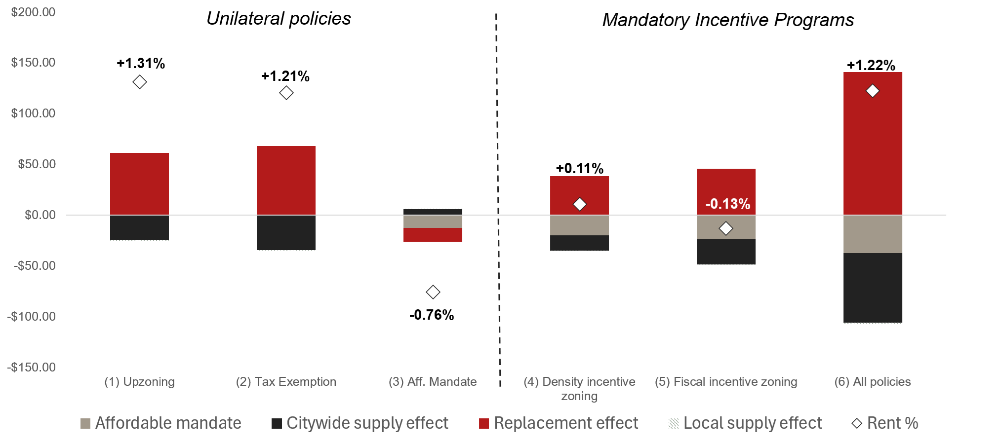
Average expected rent change under each counterfactual, decomposed into the affordable-share, citywide-supply, local-supply, and replacement effects. Policies that raise construction raise average rents because the replacement effect dominates the supply effect.
Housing supply as the sum of redevelopment decisions
In mature cities, new housing arrives almost entirely through redevelopment. In New York City between 2023 and 2025, roughly two-thirds of private residential permits were filed on parcels that already carried a building. New construction therefore means replacing older, depreciated, lower-rent structures with newer, taller, higher-rent ones. The supply that policy seeks to encourage is also the mechanism by which the cheapest units disappear. (See the permit patterns in Figure 1, in Calibration below.)
Quantitative urban models, the dominant tools for studying urban housing markets, are not built to capture this. They resolve household and firm location choices finely but treat housing supply through an aggregate elasticity, with no individual parcel choosing when and how densely to redevelop. In that setting, housing created by expanding the stock cannot be distinguished from housing created by replacing existing structures, so these models do not explain why policies that stimulate construction simultaneously reduce the stock of inexpensive housing. We address this gap by modeling housing supply as the aggregation of parcel-level redevelopment decisions. We call these decisions the redevelopment margin.
In our model, developers decide whether, when, and how intensively to redevelop individual parcels, including development on empty parcels, by comparing the value of immediate redevelopment with the option value of waiting. The parcel-specific rent process each developer takes as given must be consistent with the collective redevelopment decisions of all developers. This fixed point defines a spatial equilibrium in which the market clears through redevelopment, and the timing, intensity, and location of redevelopment, and hence housing supply, emerge endogenously. Housing policies that incentivize development (Carrots), such as density bonuses and tax exemptions, and affordability mandates (Sticks), affect supply not by shifting an exogenous aggregate supply curve but by changing individual redevelopment decisions. Because these decisions are made parcel by parcel, policy changes not only the quantity of housing but also its composition, because redeveloped units enter the stock without the depreciation carried by the units they replace.
What is new
- The reframing. Housing supply is not an aggregate curve that policy shifts. It is the sum of thousands of parcel-level redevelopment decisions, each a timed choice under uncertainty about whether a specific building is torn down, when, and how big its replacement is. That is the redevelopment margin, and the whole paper is built on it.
- A model that does what neither existing approach can. Quantitative urban models resolve location finely but treat supply as a smooth aggregate; the city-growth literature models renewal coarsely, without an individual parcel making a timed, density decision under uncertainty. This framework does both, embedded in a spatial equilibrium where the citywide and local rent effects those decisions produce feed back into the rent process each developer is reacting to.
- The counterintuitive result it makes visible. Because redevelopment replaces depreciated stock with new stock, more construction can raise average rents, not despite standard supply and demand but alongside it. See Finding 2.
- Grounded in data, not assumed. The dominance of redevelopment is shown in NYC permit records before the model appears. See above and Calibration.
Three findings
The calibrated model delivers three central results.
Finding 1
Instruments that deliver similar supply work through different margins
Tax incentives and density bonuses can produce similar aggregate supply, but through different channels. Tax exemptions act on the extensive margin: by raising post-construction returns they lower the redevelopment threshold and pull projects forward, accelerating redevelopment across a broad set of parcels. Density bonuses act on the intensive margin: they raise the value of redevelopment by permitting height, but they also raise the option value of waiting, so they can delay redevelopment on parcels near their threshold even as they increase the size of projects that do proceed. Parcels near their threshold (older, underbuilt) respond most to fiscal incentives; high-rent locations respond most to density bonuses. Because parcels differ, uniform policy produces heterogeneous effects across space.
Figure 3. Effects of policy instruments on property value and development probability.
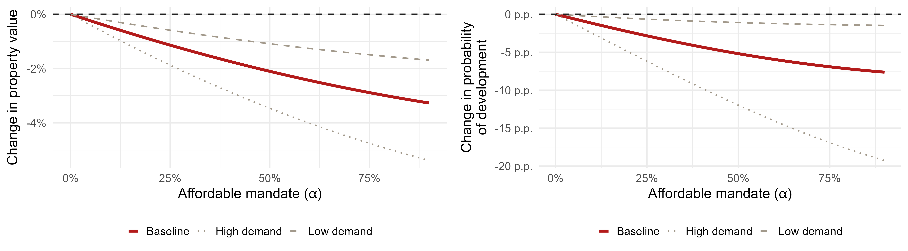
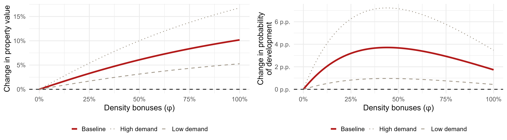
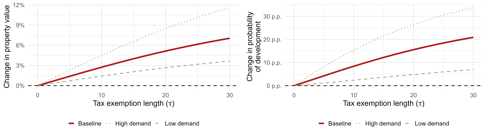
Effects of policy instruments on property value and development probability, by instrument.
Finding 2
The replacement effect: more construction, higher average rents
Because production occurs through replacement, policies that raise construction shift both the quantity and the composition of the stock. New units enter without the depreciation carried by the units they replace, so average rents rise. We call this compositional shift and its consequences for the rent distribution the replacement effect.
Within our calibration the replacement effect dominates the supply effect. Under upzoning, average expected rent rises by about 1.31% even as supply expands. Decomposed per unit, replacement adds about $60 per month while additional supply subtracts about $25. The result holds across the credible range of demand elasticities; only a closed-city elasticity would let the supply effect win.
These are rents across the occupied stock, not quality-adjusted prices and not household-level outcomes. Controlling for quality, prices fall as supply expands. The average rises because redevelopment shifts the composition of the stock toward newer, higher-rent units, not because any given tenant necessarily pays more.
Figure: Figure 9, the hero exhibit above.
Finding 3
Mandates produce affordable units mainly by crowding out market-rate ones
Affordability mandates raise affordable production, but primarily by displacing market-rate construction rather than by growing the stock. A 30% mandate yields roughly 42,000 affordable units while reducing market-rate construction by about 58,000. Because redevelopment under a mandate is only profitable where rents are already high, the new affordable units expand the middle of the rent distribution and leave the bottom quintile largely unchanged. Mandated units are also costly: holding total supply fixed, each affordable unit substituted for a market-rate unit costs about $59,900 under density incentive zoning and about $61,200 under fiscal incentive zoning. The incidence depends on the paired instrument. Density bonuses split the burden roughly evenly between landowners and the city; tax exemptions place almost all of it on the public sector.
Figure 6. Housing production counterfactuals.
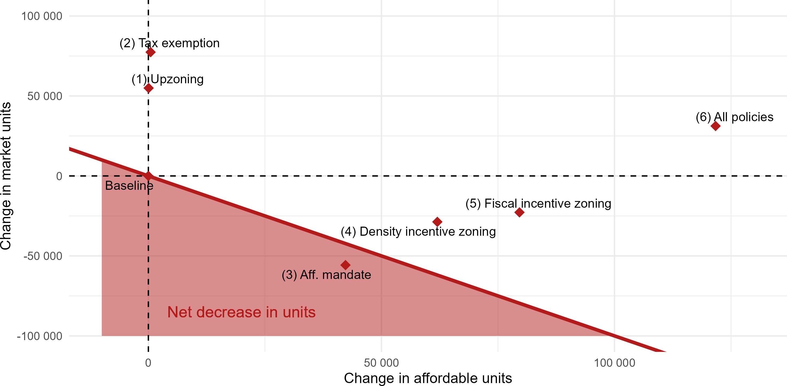
Affordable and market-rate production under each counterfactual policy. Only the combined incentive policy expands both.
Figure 12. Cost of mandated affordable housing.
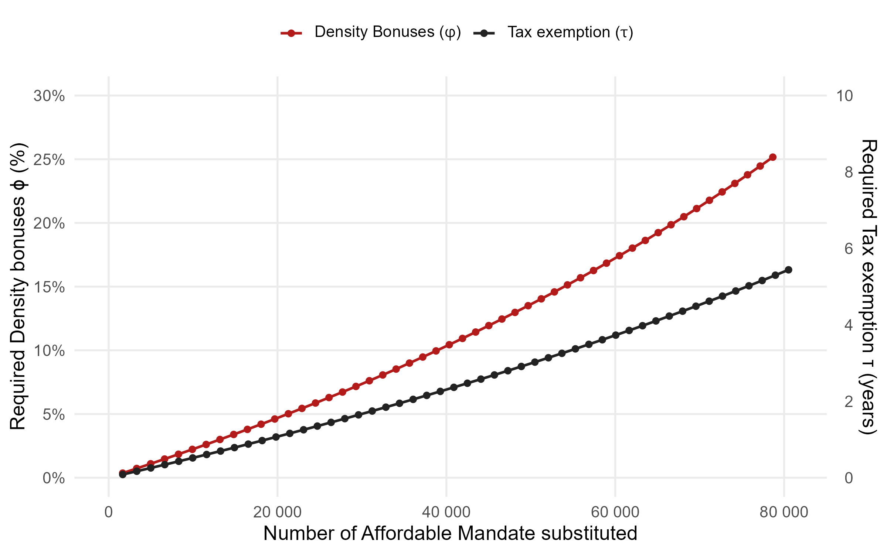
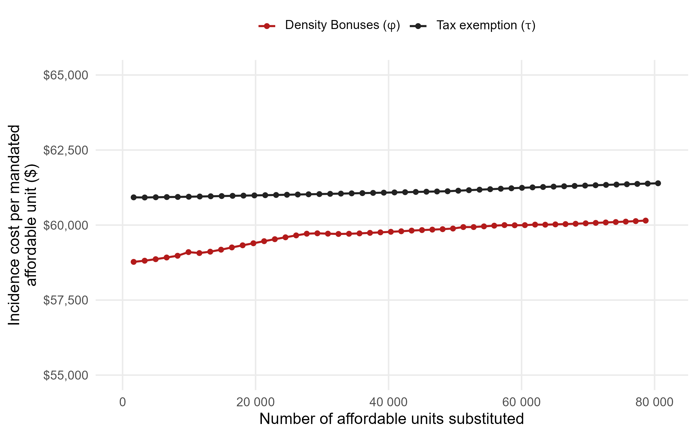
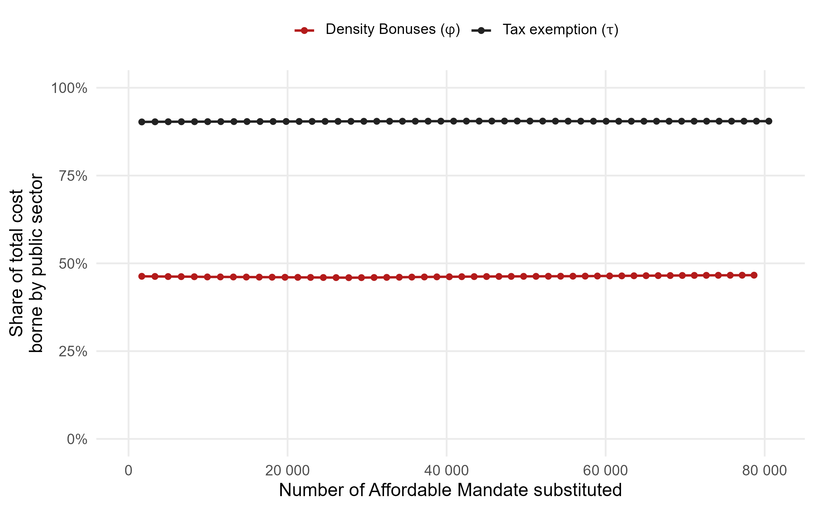
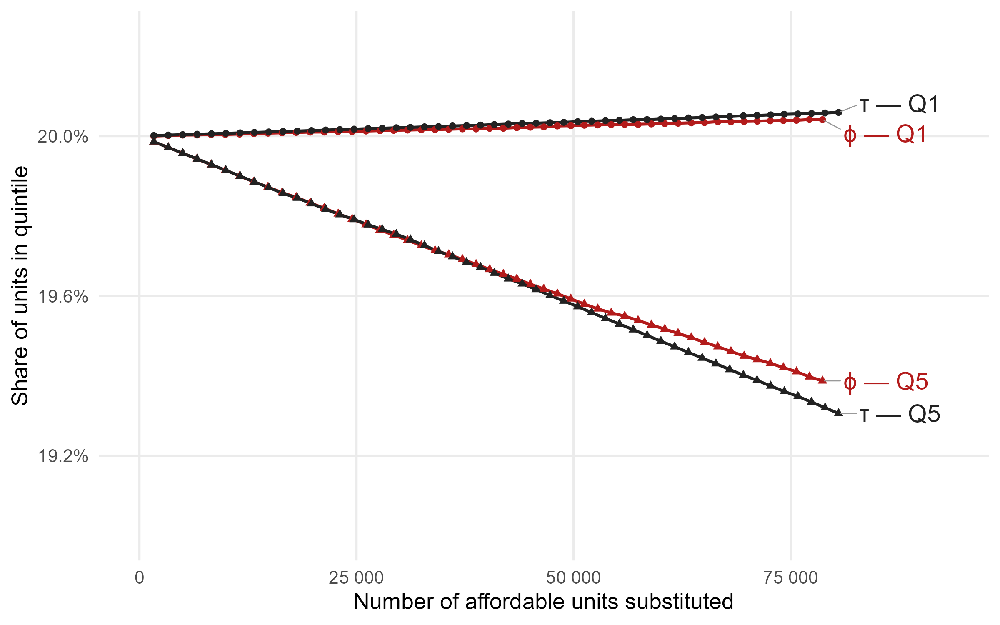
Supporting figure for Finding 3: per-unit cost and public/landowner incidence, by paired instrument.
The model in brief
Each developer holds a parcel with a current structure and an option to redevelop. Redevelopment requires irreversible demolition and construction while future rents follow a parcel-specific stochastic process, so the developer does not build the moment redevelopment turns marginally profitable. Investment occurs only once expected rent crosses a threshold that compensates for the value of waiting (Propositions 1 to 3). The developer chooses both timing and density.
The three policy instruments enter this decision directly. A mandate (α) lowers post-development rental income and raises the threshold. A density bonus (φ) raises the value of building and the optimal density, but also the threshold. A tax exemption (τ) raises post-construction returns and lowers the threshold.
Individual decisions aggregate to citywide supply, which feeds back into rents through two estimated channels: a citywide supply effect that lowers rent growth everywhere, and a local spillover that changes rents near new construction. The rent process each developer faces must be consistent with everyone's decisions, and that fixed point is the spatial equilibrium. Expected rental income at each horizon is then aggregated for policy evaluation (Corollary 1).
See Full model, Section 2· Policy instruments, Section 3· Calibration, Section 4
Calibrated to New York City, validated out of sample
We calibrate the model to 765,305 New York City residential parcels using parcel-level density and building age, rents from the American Community Survey, and neighborhood rent dynamics from CoStar. Rental income falls with building age and rises with height. Demolition costs exhibit increasing returns to scale and construction costs are convex in height.
The empirical patterns that motivate the model are visible directly in the permit data. Redevelopment concentrates on parcels with unused density and on older buildings: about 4.0% of parcels with more than 75% of their allowable density unused filed a permit, and buildings over 100 years old redevelop at roughly 2.5 times the rate of those under 40, renting for about 14% less. Development also tracks rents: a 10% higher rent per square foot is associated with 7.1% more permitted units, and a one-point higher expected rent growth with 39% more.
Figure 1. Permits by unused density and building age.
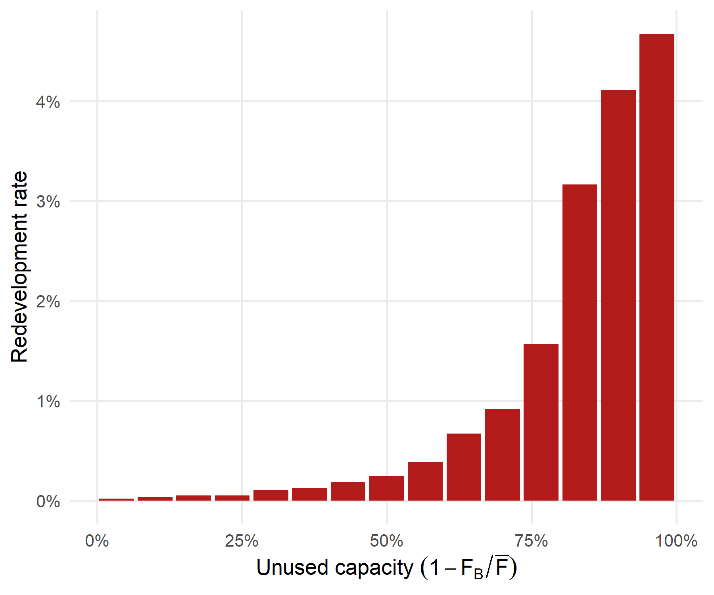
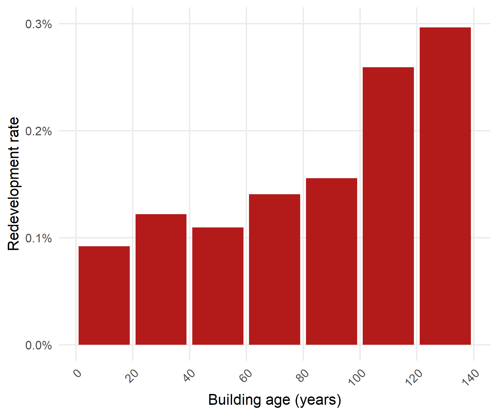
Redevelopment concentrates on underbuilt, older parcels.
Figure 2. Permits and rent dynamics.
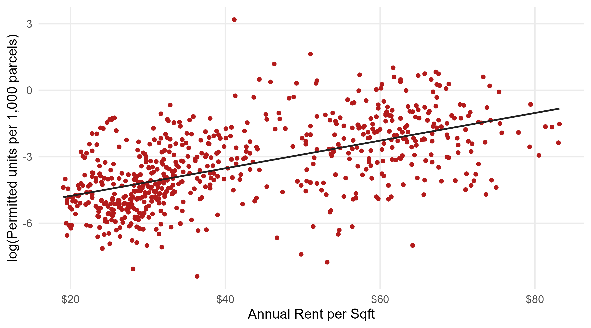
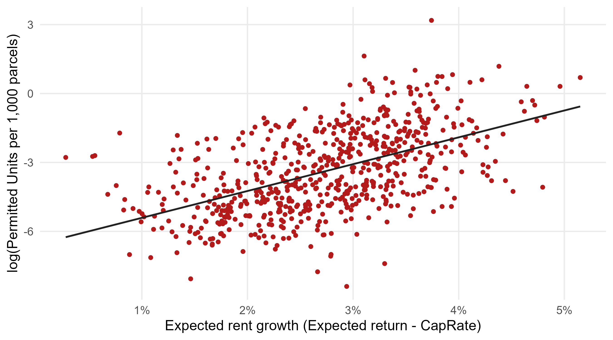
Permitted units track rent per square foot and expected rent growth.
Named result: separating the citywide and local effects of supply on rents
How new supply feeds back into rents runs through two distinct channels that the literature has often conflated, and we separate them. The citywide channel governs how aggregate supply moves rents everywhere; we derive it from household demand theory (migration plus floorspace consumption) rather than borrow a reduced-form number, giving an inverse demand elasticity of −0.66, robust across −0.91 to −0.43.
The local channel is the one under debate, because nearby construction pushes rents two ways at once: new units compete with the incumbent stock and pull rents down, while they can raise local amenities and pull rents up. The sign is therefore an empirical question, and we estimate it directly. Using building-level rental income from NYC Notices of Property Value and a staggered difference-in-differences event study (Callaway and Sant'Anna, 2021), we compare buildings that experience a nearby completion of a 50-plus unit building within 500 feet against otherwise similar buildings not yet exposed, so identification comes from the timing of completion rather than proximity to redevelopment. A completion raises the surrounding stock by about 10% (ATT 0.102, significant at 1%) and holds it there, a large and durable local supply shock, yet rents do not respond significantly at any horizon. The implied local elasticity is essentially zero (−0.01), robust across radii, samples, and specifications. The near-zero is not a modeling convenience: it reflects local competition and local amenity gains roughly offsetting.
Figure 4. Local effects of a nearby building completion on supply and rents.
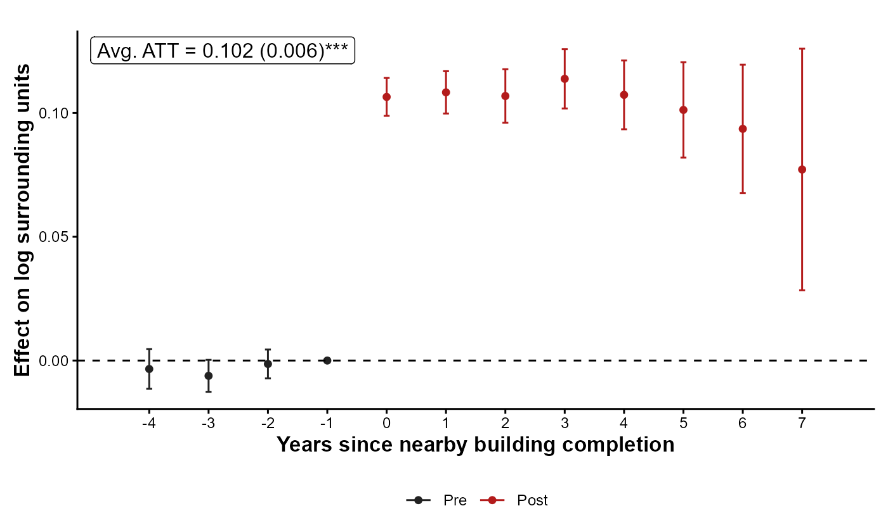
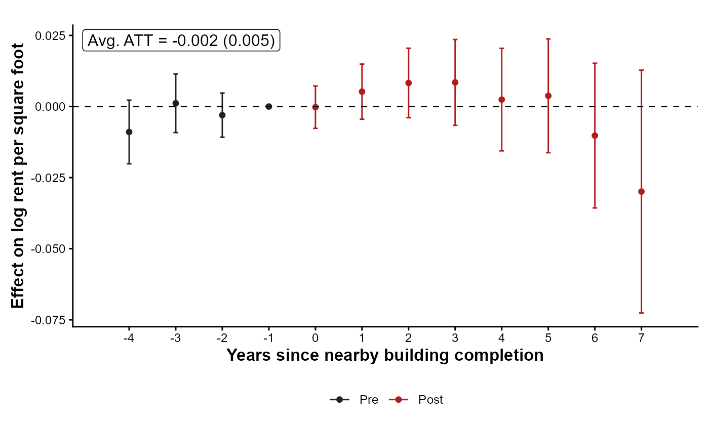
Local supply and rent response to a nearby 50-plus unit completion.
Two validation checks
Figure 5. Model validation.
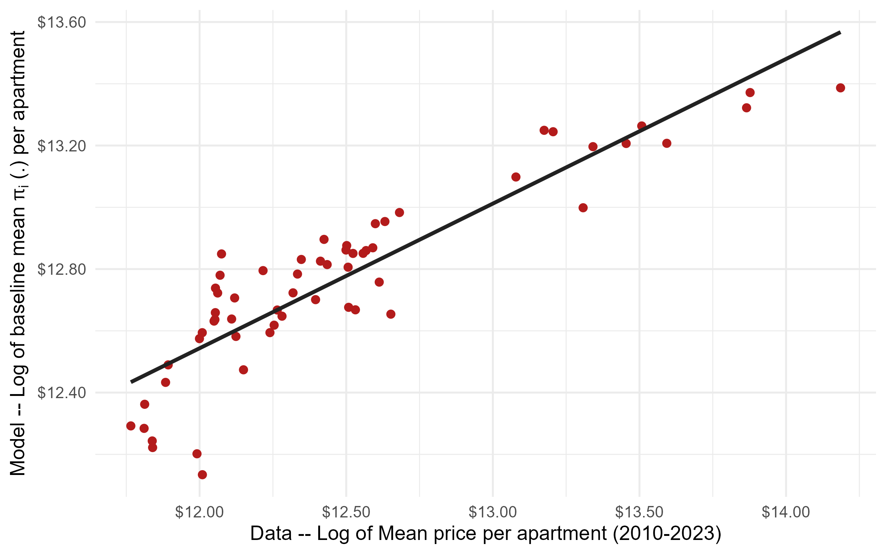
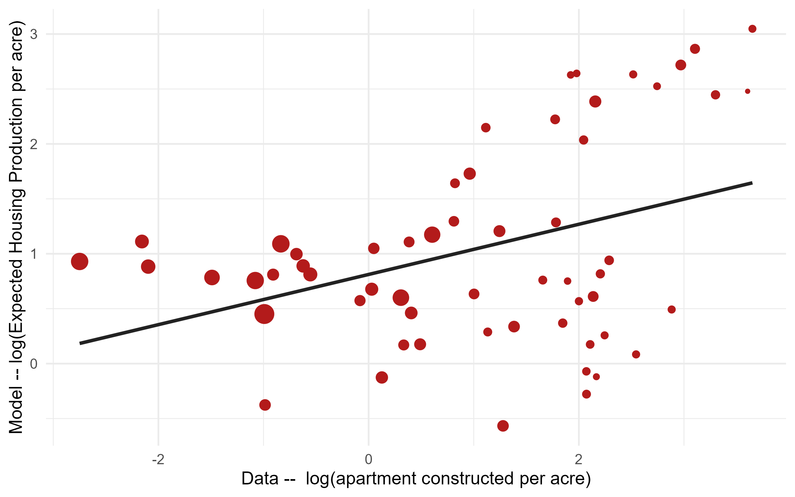
Out-of-sample model validation against CoStar transactions and observed construction.
Explore the policy space
Move the instruments and see how the model's outcomes respond across the policy space. The tool reads the same simulation grid behind the counterfactuals; the printed figures are points on these surfaces.
When the replacement effect dominates
The replacement effect is a feature of mature housing markets, where new construction requires demolishing existing structures. It weakens where development occurs on vacant or underused land, because there is little lower-rent stock to replace. In the model, targeting the least-utilized parcels produces the smallest rent increase of any scenario, the cleanest internal check on the mechanism. The effect also weakens when housing demand is more elastic, though across the empirically credible range the replacement effect still dominates; only a closed-city elasticity of about −1.43 flips the sign. And because redevelopment and rents are jointly determined, the parameter regions that would deliver a dominant supply effect are the same ones that weaken redevelopment, so no region lets developers build without regard to the rents their construction will support. The result is a statement about redevelopment-driven markets, not about every city.
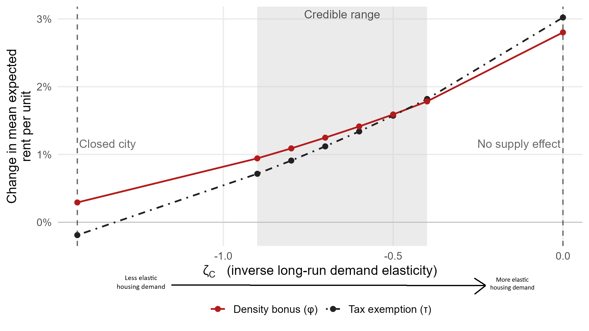
Average expected rent response across the credible range of citywide demand elasticities.
Paper and materials
- Working Paper (PDF) Link pending
- Online Appendix (PDF) Link pending
- Slides Live after the Purdue presentation
BibTeX
@techreport{LebretLiuValentin2026,
author = {Lebret, Daniel and Liu, Crocker H. and Valentin, Maxence},
title = {When Redevelopment Transforms the Housing Stock: Carrot \& Stick Policy and
the Affordability Puzzle},
year = {2026},
type = {Working Paper}
}
This version supersedes a previous version entitled "Carrot & Stick Zoning."
Data and replication code will be posted upon publication.